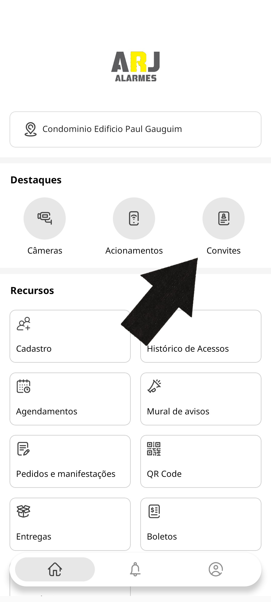
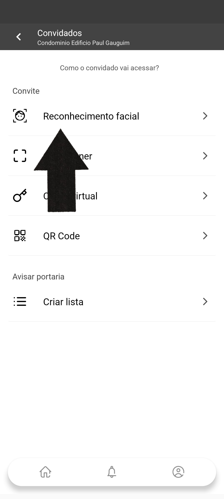
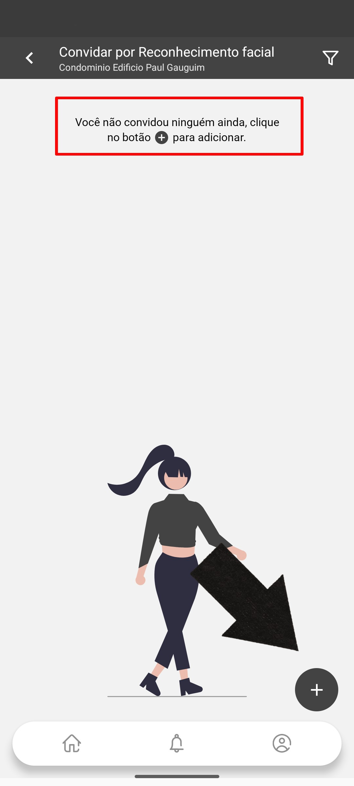
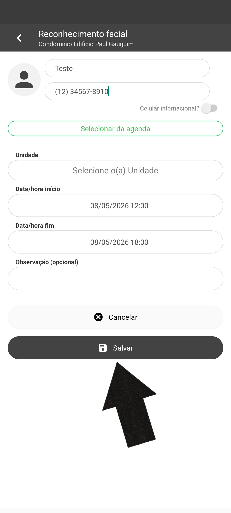
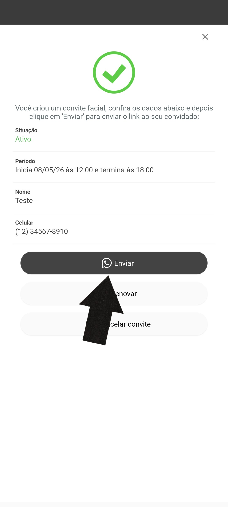

Aprenda passo a passo como cadastrar um convidado para acesso via reconhecimento facial pelo aplicativo.
Na tela inicial do aplicativo, localize a seção Destaques e toque no ícone Convites.

Na tela Convidados, você verá as opções de acesso disponíveis. Toque em Reconhecimento facial.

Na tela de Convidar por Reconhecimento Facial, caso ainda não haja convidados cadastrados, aparecerá a mensagem indicando que você ainda não convidou ninguém. Toque no botão + no canto inferior direito para adicionar um novo convidado.

Preencha as informações do convidado:
• Nome do convidado
• Celular com DDD
• Unidade (selecione sua unidade)
• Data/hora início — quando o acesso começa
• Data/hora fim — quando o acesso termina
• Observação (opcional)
Após preencher, toque em Salvar.

Após salvar, uma tela de confirmação será exibida com os dados do convite:
• Situação: Ativo
• Período de validade
• Nome e Celular do convidado
Toque em Enviar para que o link do convite facial seja enviado ao convidado via WhatsApp. O convidado receberá um link para realizar o cadastro do rosto dele.
